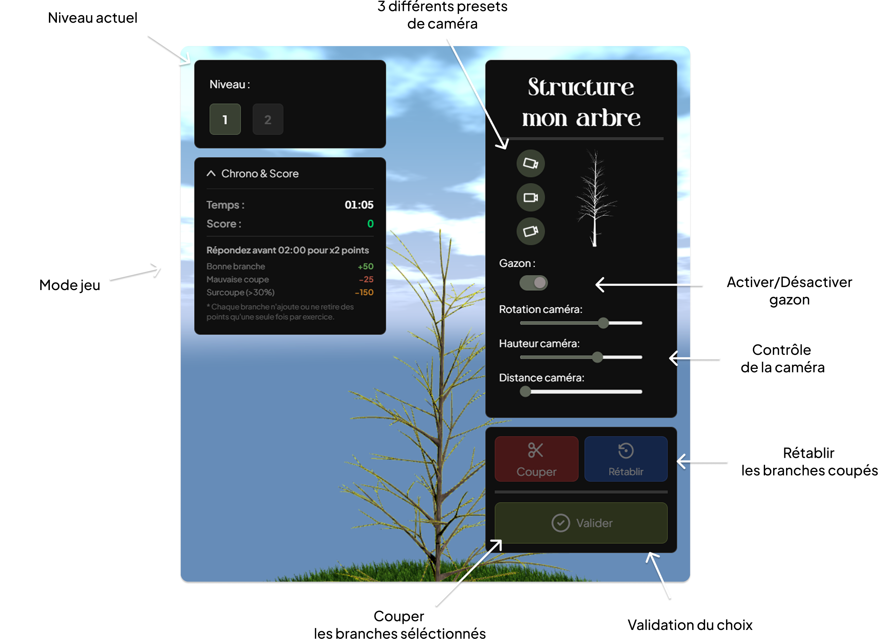

Bienvenue dans ce logiciel de simulation en horticulture développé par des étudiant·es de la technique en multimédia pour les étudiant·es en horticulture ! Ce jeu éducatif a été conçu pour vous permettre de mettre en pratique les notions théoriques liées à la taille de formation des jeunes arbres dans un environnement virtuel et sécuritaire. À travers différentes mises en situation, vous devrez observer la structure des arbres, analyser leur développement et choisir les bonnes interventions de taille afin de favoriser une croissance saine et équilibrée.
Mode pratique : idéal pour apprendre à votre rythme, expérimenter et
mieux comprendre les impacts de chaque coupe sans risque pour les
végétaux.
Mode compétition : mettez vos connaissances et votre rapidité à
l’épreuve ! Le jeu calcule le temps nécessaire pour réussir à couper
toutes les bonnes branches. Les meilleurs résultats seront affichés dans
le tableau d’honneur.
L’objectif est de développer vos compétences et votre jugement professionnels avant de réaliser des interventions sur de vrais arbres à l’extérieur. Ce projet est le résultat d’une collaboration entre des étudiant·es en technique multimédia et le programme d’horticulture afin d’offrir une expérience d’apprentissage interactive, concrète et adaptée à la réalité du terrain. Prenez le temps d’observer, de réfléchir et d’appliquer vos connaissances : chaque décision influence l’avenir de l’arbre ! Bonne pratique et amusez-vous à apprendre autrement.

Se référer au BNQ 0605-200 et au site : https://espacepourlavie.ca/taille-des-arbres-feuillus
1. Identification de l’individu : port naturel, problèmes
2. Situation (est-il au bon endroit) + est-ce que je reviens
3. Bilan sanitaire (mort, malade, brisée, interférentes)
4. Bilan structural
A) Dominance apicale seulement sur les arbres ayant un port pyramidale (choisir un axe principal: plus vigoureux,
plus vertical, mieux orienté)
B) Sélection des charpentières (disposition axiale/ radiale, angle d’insertion aigue = écorce incluse)
C) Hauteur de la couronne (rapport tronc/ramure)
D) BBT (création de BBT dans le but de les enlever plus tard)
*Attention au 30% maximum par année
Chef de projet : Thomas O Fredericks
Enseignante en horticulture : Naomi Jarry
Modélisation et programmation : Elie Daher
Design UI et programmation : Dana Saavedra-Torrano